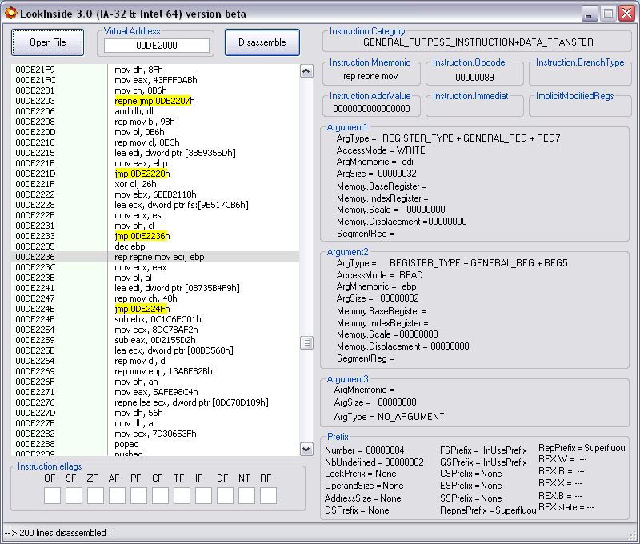
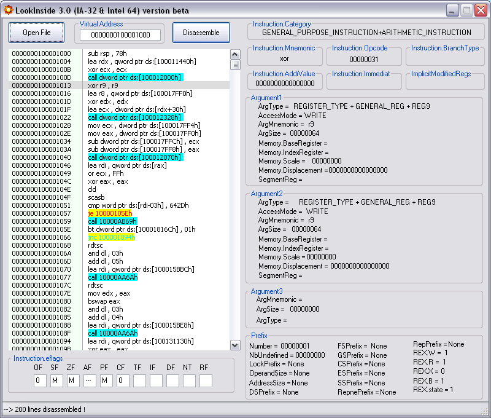
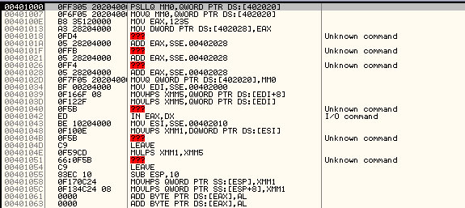
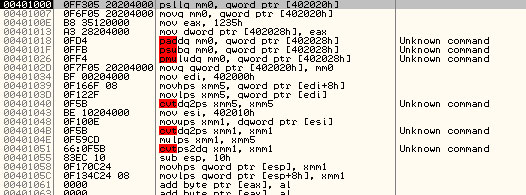
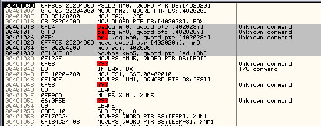

Screenshots
You can see here some screenshots from LookInside or FullDisasm.
BeaEngine for 32 bits
Here is an example of desassembly on a 32 bits binary. LookInside uses BeaEngine functionalities to colorize Branch Instructions like OllyDbg do. We can even make the difference between Jcc and Jncc. BeaEngine allows to identify destination address so we can draw small arrows like OllyDbg do.

BeaEngine for 64 bits
This second example concerns disassembly of a 64 bits binary.

Plugin OllyDbg 1.10 and Immunity Debugger 1.xx : FullDisasm.
This plugin allows OllyDbg 1.10 to change the disassembler engine . You can see here SSE instructions recognition :
normal disassembly :

with FullDisasm (Ctrl+W) :

with FullDisasm (Ctrl+X) :

This plugin allows you some fantasies. For instance, you can display instructions using the GNU Assembler syntax :